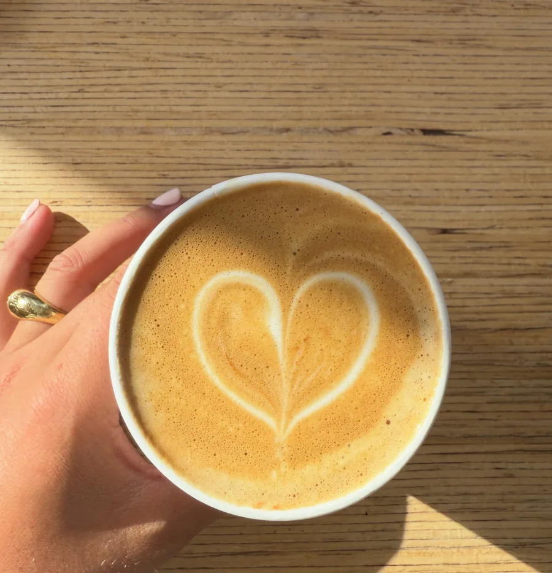
AltijdKoffie
Van cortado en flat white tot cappuccino en latte. Warm, of iced als het zonnetje schijnt.
Specialty coffee om mee te nemen, aan de Bruul in Mechelen. Een flat white voor onderweg, een romige chai latte op ons bankje of een warme choco om mee te nemen naar de Kruidtuin. Altijd met een glimlach erbij.
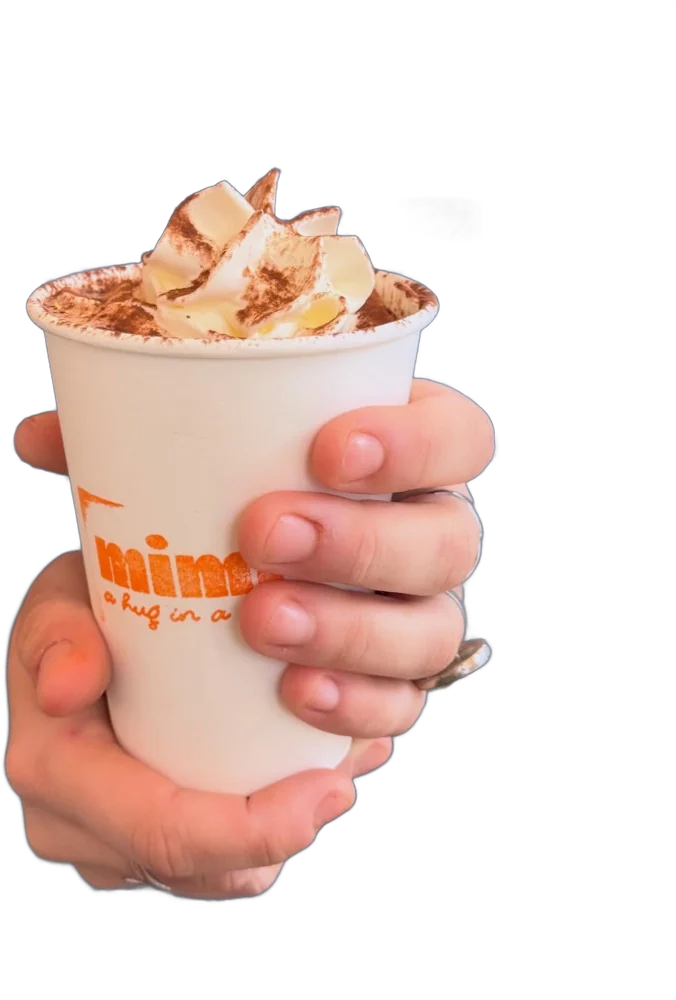
Klassiekers met specialty bonen, warme en ijskoude varianten en elk seizoen iets nieuws om te proberen. Liever plantaardig? Vraag gerust naar haver- of kokosmelk.

AltijdVan cortado en flat white tot cappuccino en latte. Warm, of iced als het zonnetje schijnt.
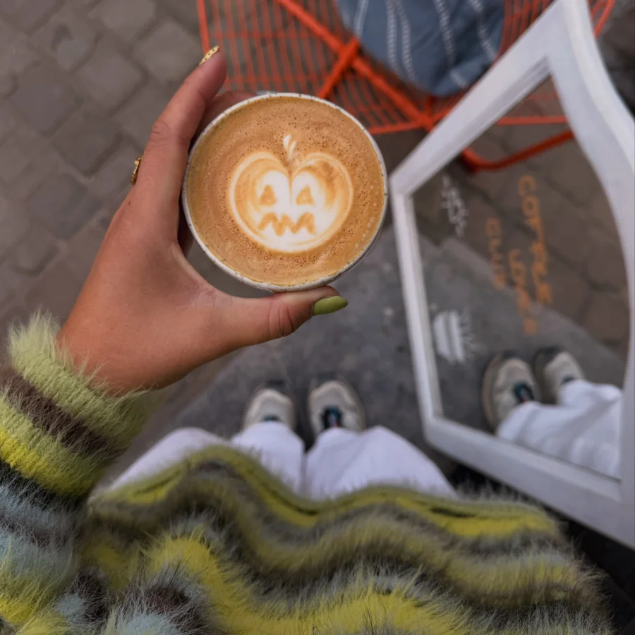
SeizoenPumpkin spice in de herfst, een tiramisu latte als het koud wordt. De kaart draait mee met het weer.
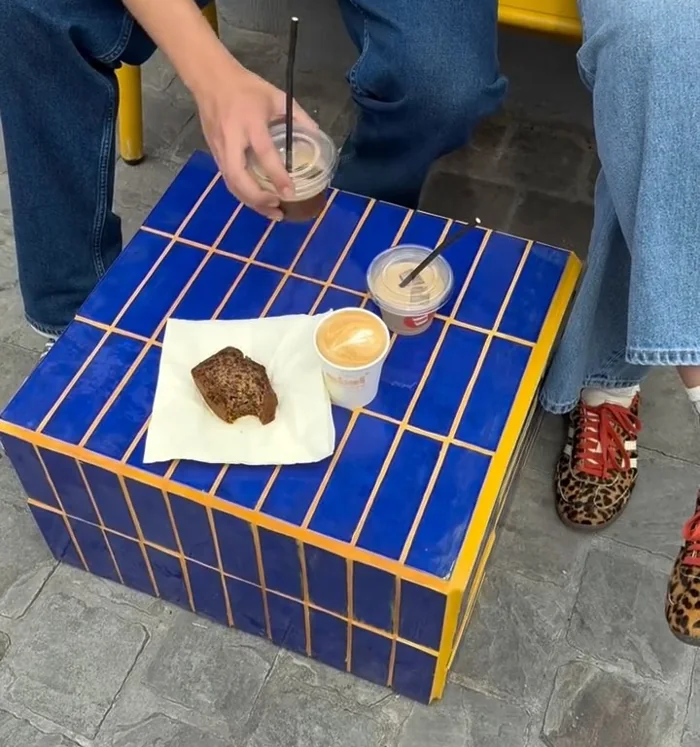
ErbijEen stuk cake of een dikke koek bij je koffie, zo uit de vitrine.
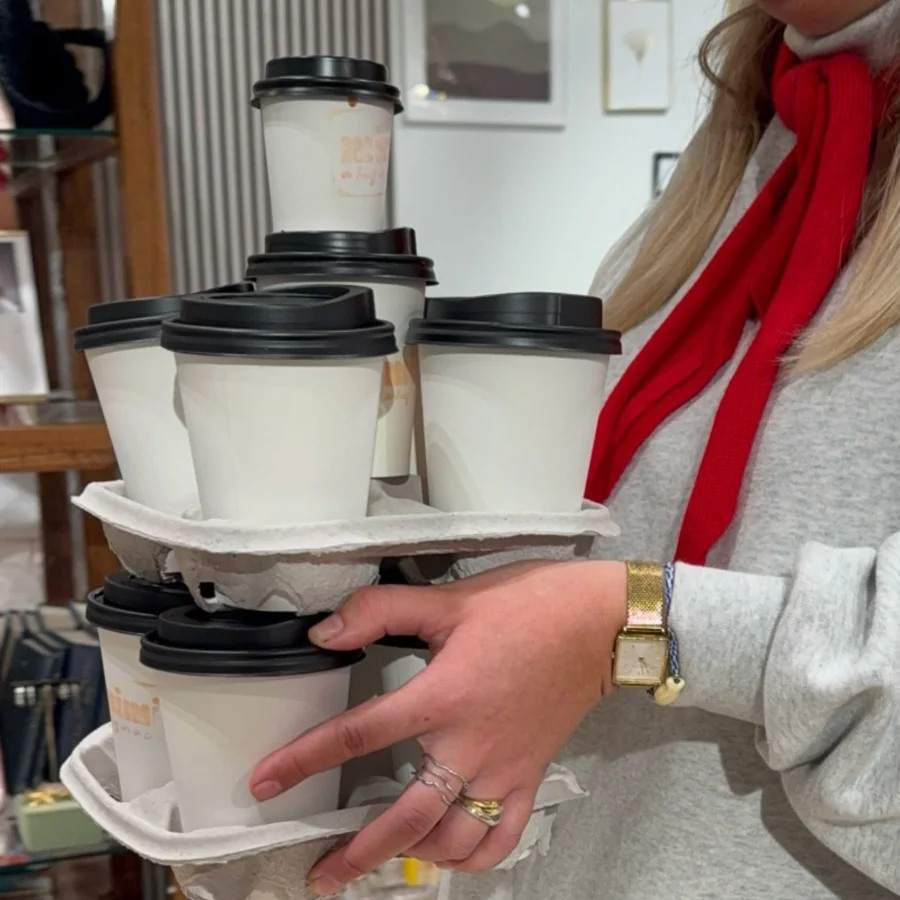
Voor de ploegTrakteer je collega's of je vriendinnen? Je hele bestelling gaat netjes mee in een draagbakje.
Mimi is een koffieraam aan de Bruul, recht naast het park. Je bestelt aan het venster, neemt je beker mee voor onderweg of gaat even zitten op een van de bankjes voor de deur.
In 2026 werd Mimi vijf jaar. Vijf jaar vaste klanten, vrolijke baristas en een slogan die we elke dag waar proberen te maken.
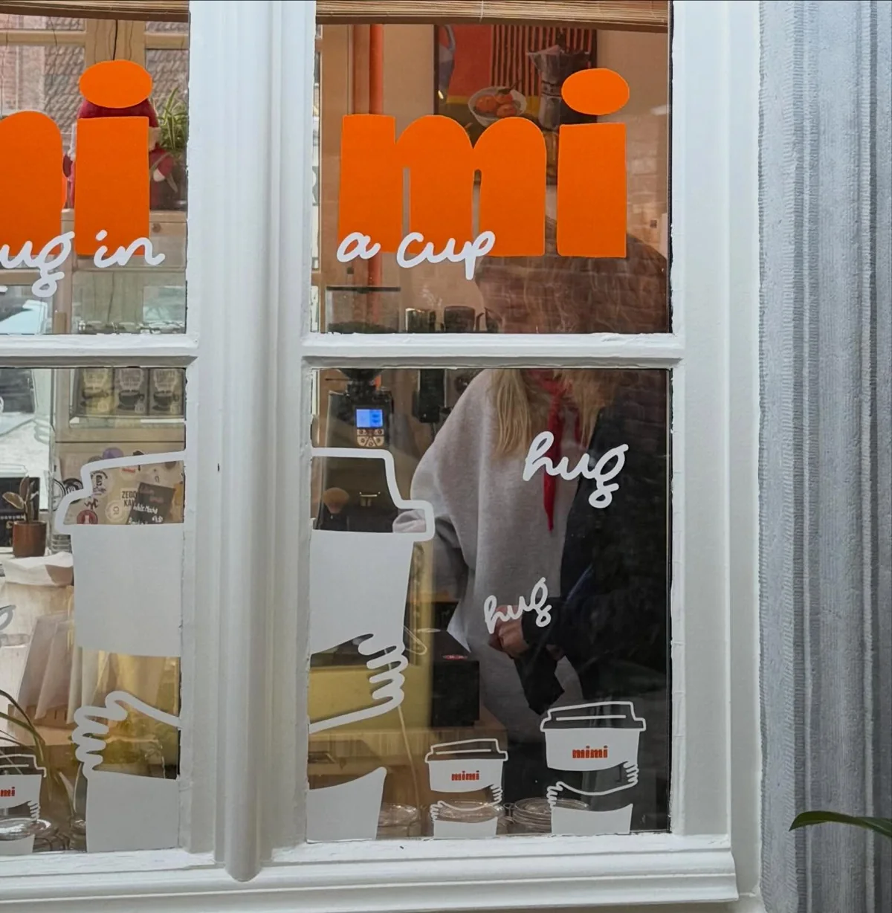
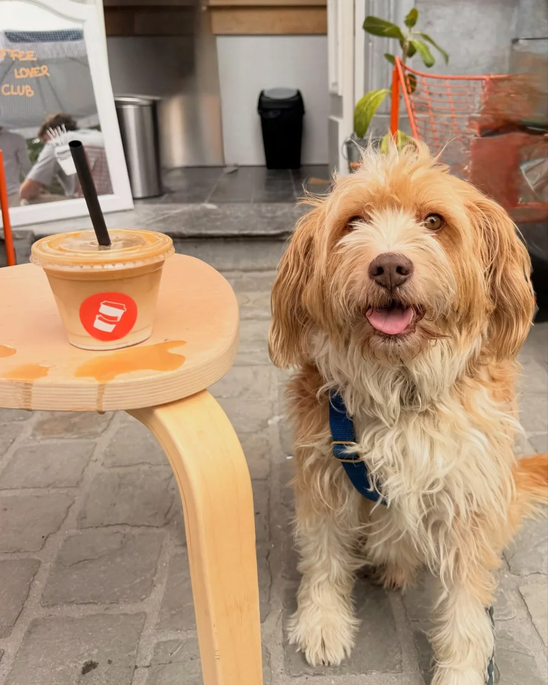
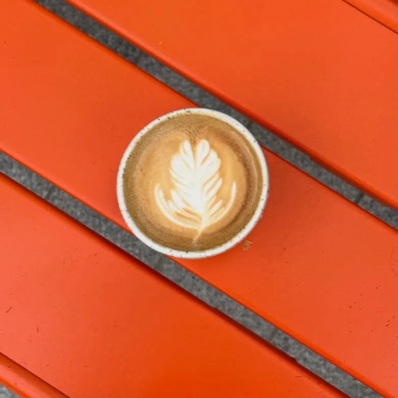
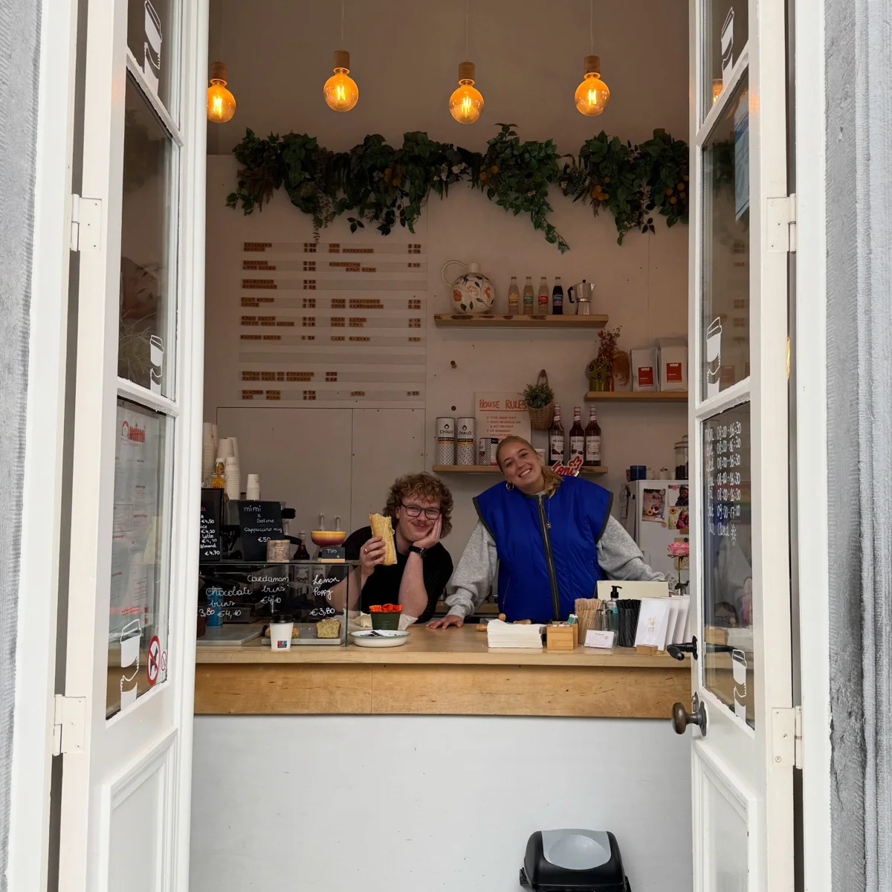
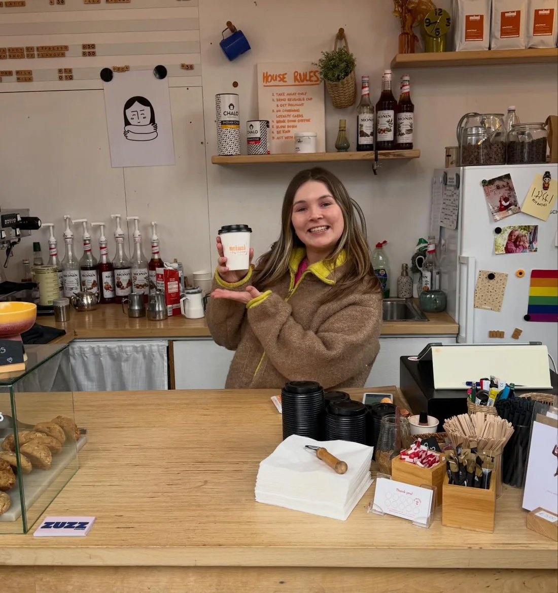
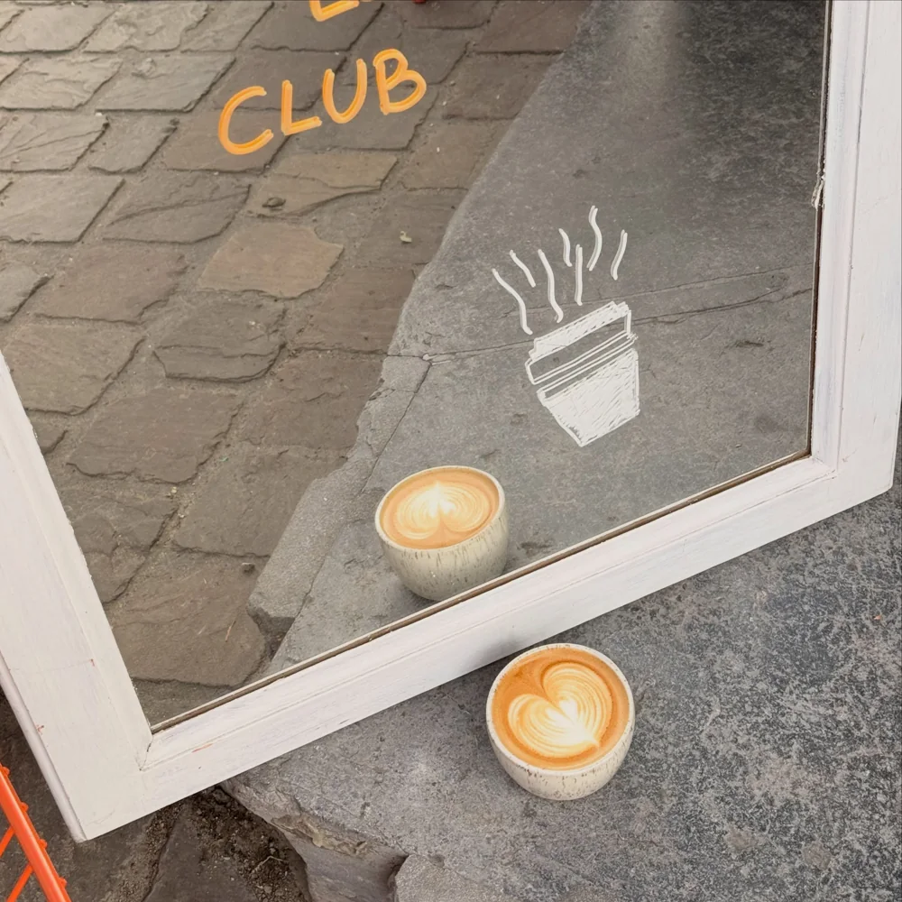
Wie Mimi graag ziet, draagt het ook. In het raam vind je onze eigen merch en cadeautjes voor koffieliefhebbers, en af en toe organiseren we iets extra, zoals een sip & paint of een winterfeestje. Dat zie je altijd eerst op Instagram.
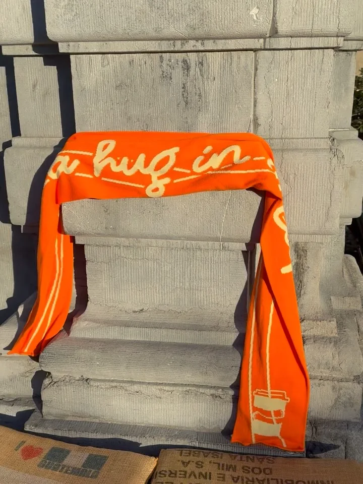
"Sommige plekken geven je energie nog vóór je eerste slok. Mimi is zo'n plek. Warme mensen, een heerlijke sfeer en zonder twijfel de beste chai latte van Mechelen. "A hug in a cup" is niet zomaar een slogan, je voelt het echt."
"Meest gezellige koffiebar van heel Mechelen en omstreken!! Fantastisch personeel, lekkere koffie, chai en matcha. Al 3 jaar vaste klant!"
"Lekkere koffie om mee te nemen naar de Kruidtuin of om op te drinken op hun terrasje. Ze verkopen ook leuke kaartjes! Ideale tussenstop tijdens het shoppen in Mechelen."
Je vindt ons aan de Bruul, op wandelafstand van de Kruidtuin en de winkelstraten. Even een vraag of een grote bestelling? Stuur ons gerust een berichtje.
Ik maakte deze demo voor jullie om te tonen wat er kan. Na een kort gesprek maak ik er iets veel persoonlijkers van, helemaal naar jullie wens.
Vrijblijvend. Ik kom langs of we bellen.
Op maat, op jullie eigen domein.
Geen voorschot. Jullie betalen pas als alles klaar is.
Hosting, domeinnaam en kleine wijzigingen, zoals nieuwe openingsuren.
Omdat een voorbeeld meer zegt dan een mail. Zo zien jullie meteen wat er kan, en het kost jullie niets.
Nee. Het gesprek is vrijblijvend. Vinden jullie het niks, dan is het daarmee gedaan.
Na ons gesprek staat jullie site binnen 10 tot 14 dagen online.
Zeker. Jullie domeinnaam kan gewoon blijven, de nieuwe site komt in de plaats van de oude.
Nee, dat doe ik op basis van ons gesprek. Eigen foto's zijn mooi meegenomen, maar niet nodig om te starten.